Youth Risk Behavior Surveillance
Every two years, the Centers for Disease Control and Prevention conduct the Youth Risk Behavior Surveillance System (YRBSS) survey, where it takes data from high schoolers (9th through 12th grade), to analyze health patterns. You will work with a selected group of variables from a random sample of observations during one of the years the YRBSS was conducted.
Load the data
This data is part of the openintro textbook and we can load and inspect it. There are observations on 13 different variables, some categorical and some numerical. The meaning of each variable can be found by bringing up the help file:
?yrbss
data(yrbss)
glimpse(yrbss)
## Rows: 13,583
## Columns: 13
## $ age <int> 14, 14, 15, 15, 15, 15, 15, 14, 15, 15, 15, …
## $ gender <chr> "female", "female", "female", "female", "fem…
## $ grade <chr> "9", "9", "9", "9", "9", "9", "9", "9", "9",…
## $ hispanic <chr> "not", "not", "hispanic", "not", "not", "not…
## $ race <chr> "Black or African American", "Black or Afric…
## $ height <dbl> NA, NA, 1.73, 1.60, 1.50, 1.57, 1.65, 1.88, …
## $ weight <dbl> NA, NA, 84.4, 55.8, 46.7, 67.1, 131.5, 71.2,…
## $ helmet_12m <chr> "never", "never", "never", "never", "did not…
## $ text_while_driving_30d <chr> "0", NA, "30", "0", "did not drive", "did no…
## $ physically_active_7d <int> 4, 2, 7, 0, 2, 1, 4, 4, 5, 0, 0, 0, 4, 7, 7,…
## $ hours_tv_per_school_day <chr> "5+", "5+", "5+", "2", "3", "5+", "5+", "5+"…
## $ strength_training_7d <int> 0, 0, 0, 0, 1, 0, 2, 0, 3, 0, 3, 0, 0, 7, 7,…
## $ school_night_hours_sleep <chr> "8", "6", "<5", "6", "9", "8", "9", "6", "<5…
Before you carry on with your analysis, it’s is always a good idea to check with skimr::skim() to get a feel for missing values, summary statistics of numerical variables, and a very rough histogram.
Exploratory Data Analysis
You will first start with analyzing the weight of participants in kilograms. Using visualization and summary statistics, describe the distribution of weights. How many observations are we missing weights from?
skim(yrbss)
(#tab:eda_on_weight)Data summary
| Name |
yrbss |
| Number of rows |
13583 |
| Number of columns |
13 |
| _______________________ |
|
| Column type frequency: |
|
| character |
8 |
| numeric |
5 |
| ________________________ |
|
| Group variables |
None |
Variable type: character
| gender |
12 |
1.00 |
4 |
6 |
0 |
2 |
0 |
| grade |
79 |
0.99 |
1 |
5 |
0 |
5 |
0 |
| hispanic |
231 |
0.98 |
3 |
8 |
0 |
2 |
0 |
| race |
2805 |
0.79 |
5 |
41 |
0 |
5 |
0 |
| helmet_12m |
311 |
0.98 |
5 |
12 |
0 |
6 |
0 |
| text_while_driving_30d |
918 |
0.93 |
1 |
13 |
0 |
8 |
0 |
| hours_tv_per_school_day |
338 |
0.98 |
1 |
12 |
0 |
7 |
0 |
| school_night_hours_sleep |
1248 |
0.91 |
1 |
3 |
0 |
7 |
0 |
Variable type: numeric
| age |
77 |
0.99 |
16.16 |
1.26 |
12.00 |
15.0 |
16.00 |
17.00 |
18.00 |
▁▂▅▅▇ |
| height |
1004 |
0.93 |
1.69 |
0.10 |
1.27 |
1.6 |
1.68 |
1.78 |
2.11 |
▁▅▇▃▁ |
| weight |
1004 |
0.93 |
67.91 |
16.90 |
29.94 |
56.2 |
64.41 |
76.20 |
180.99 |
▆▇▂▁▁ |
| physically_active_7d |
273 |
0.98 |
3.90 |
2.56 |
0.00 |
2.0 |
4.00 |
7.00 |
7.00 |
▆▂▅▃▇ |
| strength_training_7d |
1176 |
0.91 |
2.95 |
2.58 |
0.00 |
0.0 |
3.00 |
5.00 |
7.00 |
▇▂▅▂▅ |
#here we see that we have 12 missing Gender Values and 1004 for the weight variable
#filter for male - 6950 male
weight_m <- yrbss %>%
filter(gender=="male")
#here we see that we have 6414 rows of weight that have a value different to na
weight_m %>%
filter(!is.na(weight)) %>%
summarise(n=n())
## # A tibble: 1 x 1
## n
## <int>
## 1 6414
#filter for female - 6621 female
weight_f <- yrbss %>%
filter(gender=="female")
#here we see that we have 6165 rows of weight that have a value different to na
weight_f %>%
filter(!is.na(weight)) %>%
summarise(n=n())
## # A tibble: 1 x 1
## n
## <int>
## 1 6165
#histo for all weight
ggplot(yrbss, aes(x=weight))+
geom_histogram()+ #plot histogram
labs(title="Fe/Male weight Distribution of 12579 Entries", #give names to title and X/Y axes
x="Weight",
y="Occurances")+
theme_bw()+ #white theme
NULL
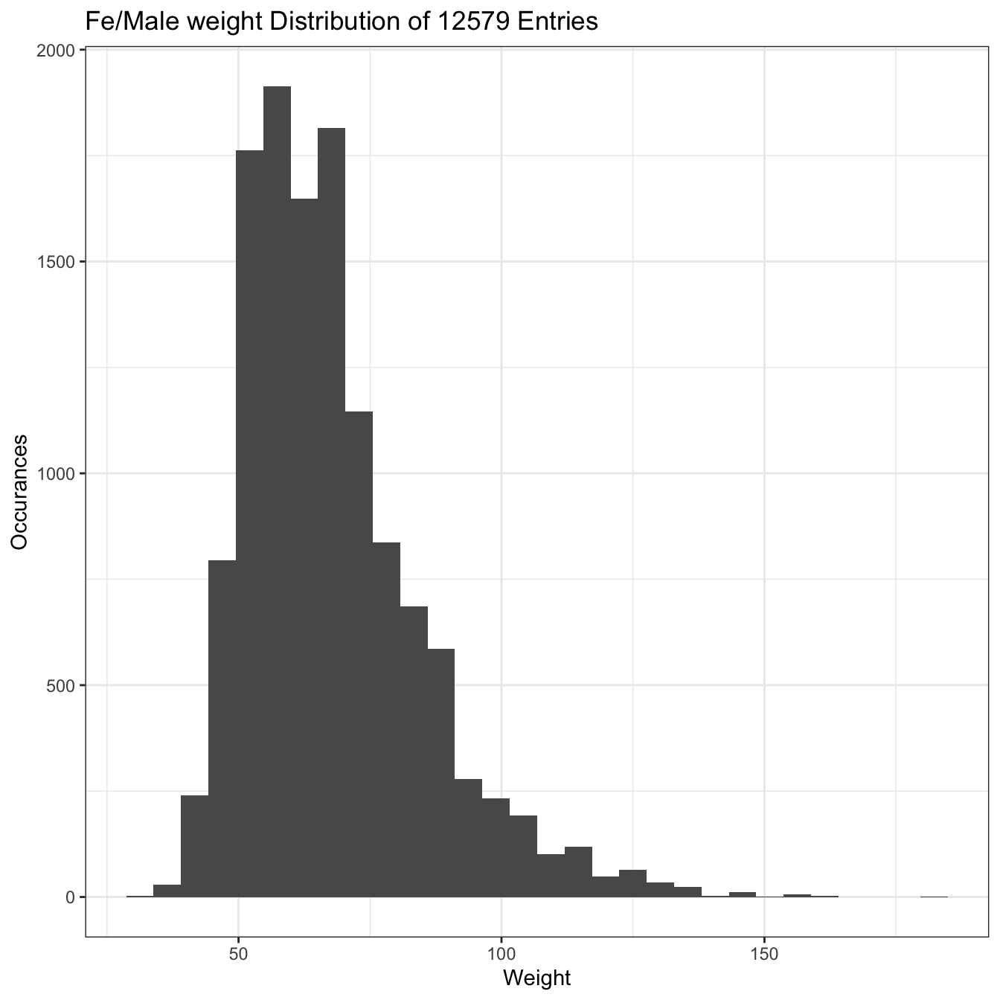
#histogram for male weight
ggplot(weight_m, aes(x=weight))+
#geom_density()+
geom_histogram()+
labs(title="Male weight Distribution of 6414 Entries",
x="Weight",
y="Occurances")+
theme_bw()+
NULL
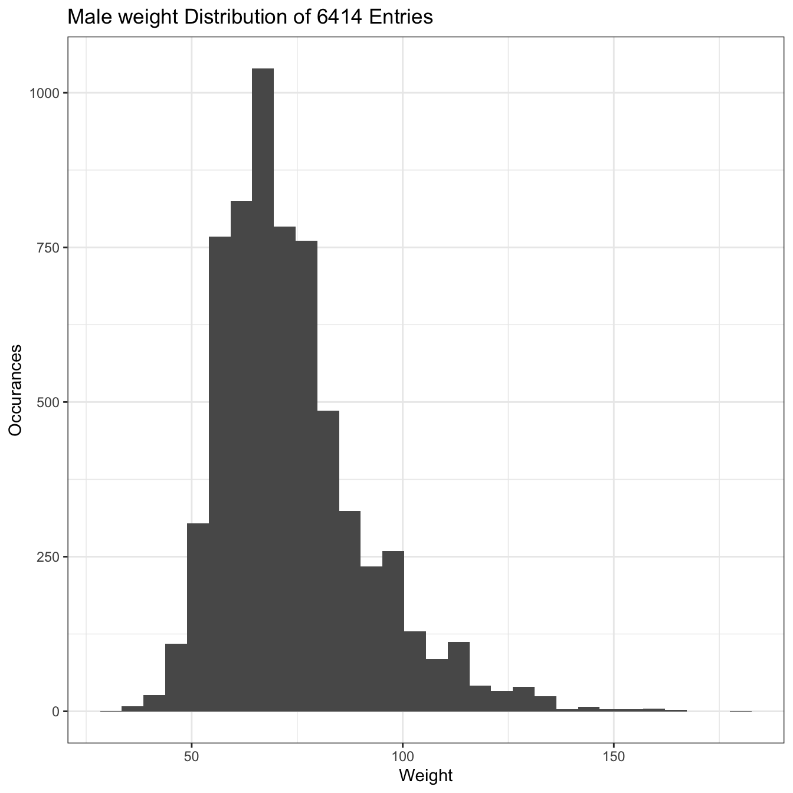
#histo for female weight
ggplot(weight_f, aes(x=weight))+
#geom_density()+
geom_histogram()+
labs(title="Female weight Distribution of 6165 Entries",
x="Weight",
y="Occurances")+
theme_bw()+
NULL
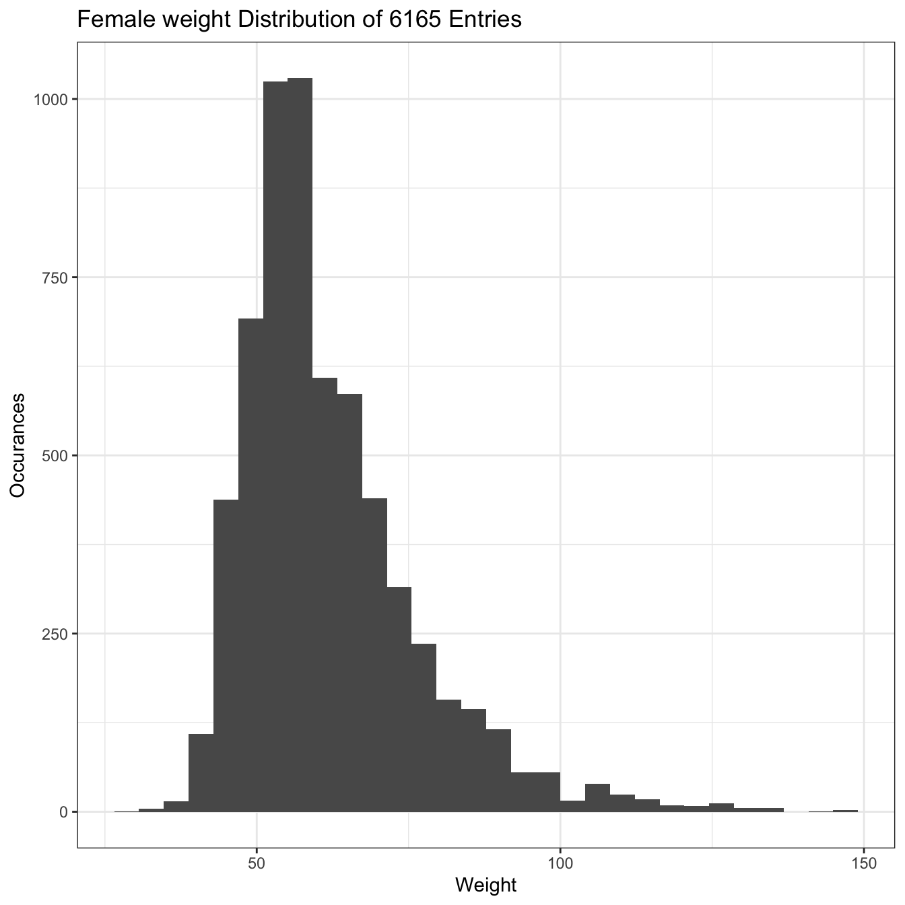
#hist for weight after ethnicity
#Remove NA
mean_weight <- yrbss %>%
filter(!is.na(weight)&!is.na(race)) %>%
group_by(race, gender) %>%
summarise(mean_weight_group=mean(weight))
yrbss1 <- yrbss %>%
filter(!is.na(weight)&!is.na(race))
yrbss_wide <- left_join(x=yrbss1, y=mean_weight, by=c("race","gender"), all=T )
glimpse(yrbss_wide)
## Rows: 10,052
## Columns: 14
## $ age <int> 15, 15, 15, 15, 15, 14, 15, 15, 15, 15, 15, …
## $ gender <chr> "female", "female", "female", "female", "fem…
## $ grade <chr> "9", "9", "9", "9", "9", "9", "9", "10", "9"…
## $ hispanic <chr> "hispanic", "not", "not", "not", "not", "not…
## $ race <chr> "Native Hawaiian or Other Pacific Islander",…
## $ height <dbl> 1.73, 1.60, 1.50, 1.57, 1.65, 1.88, 1.75, 1.…
## $ weight <dbl> 84.4, 55.8, 46.7, 67.1, 131.5, 71.2, 63.5, 9…
## $ helmet_12m <chr> "never", "never", "did not ride", "did not r…
## $ text_while_driving_30d <chr> "30", "0", "did not drive", "did not drive",…
## $ physically_active_7d <int> 7, 0, 2, 1, 4, 4, 5, 0, 0, 0, 4, 7, 7, 7, 4,…
## $ hours_tv_per_school_day <chr> "5+", "2", "3", "5+", "5+", "5+", "5+", "do …
## $ strength_training_7d <int> 0, 0, 1, 0, 2, 0, 3, 0, 3, 0, 0, 7, 7, 7, 3,…
## $ school_night_hours_sleep <chr> "<5", "6", "9", "8", "9", "6", "<5", "<5", "…
## $ mean_weight_group <dbl> 60.5, 65.1, 65.1, 65.1, 65.1, 73.8, 73.8, 73…
ggplot(yrbss1, aes(x=weight))+
geom_histogram(aes(fill=gender))+
labs(title="Weight Distribution after Race and Gender",
x="Weight",
y="Occurances") +
facet_grid(race~gender, margins=F, scales="free_y", switch="y")+
theme_minimal()+
theme(strip.text.y = element_text(size = 8), #change font size
legend.position="bottom") + #put legend down
geom_vline(data = mean_weight, #add vertical lines to the graph
aes(xintercept = mean_weight_group),
colour="red",
size=1)+
scale_x_continuous(breaks=c(0,50,60,70,80,90,100,120,140,160,200))+
#theme(strip.text.y = element_text(size=8)) +
NULL
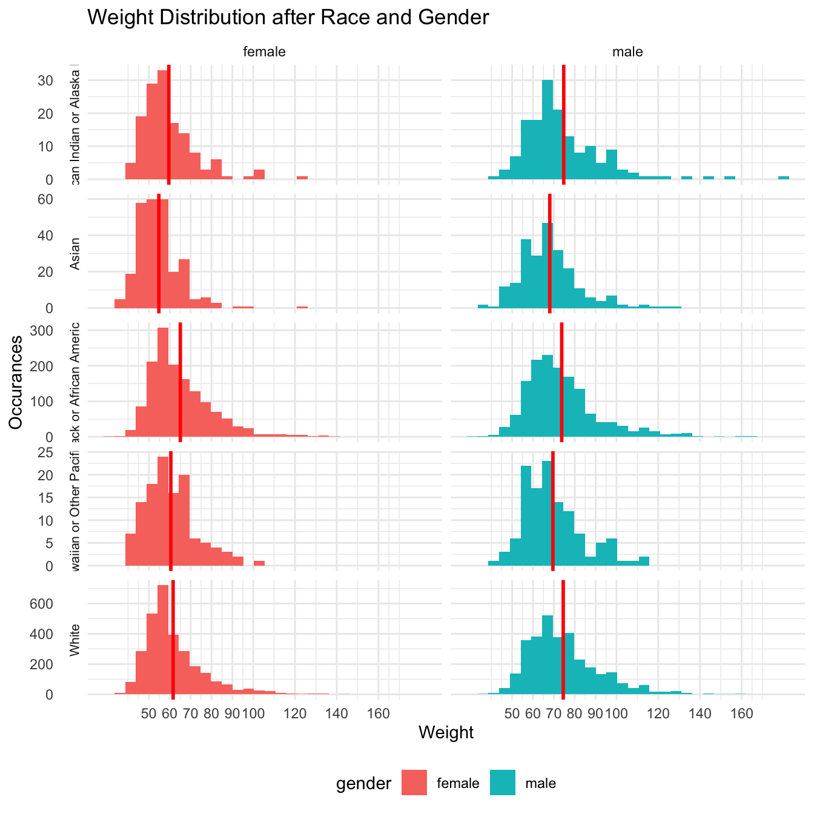
Next, consider the possible relationship between a high schooler’s weight and their physical activity. Plotting the data is a useful first step because it helps us quickly visualize trends, identify strong associations, and develop research questions.
Let’s create a new variable physical_3plus, which will be yes if they are physically active for at least 3 days a week, and no otherwise.
yrbss <- yrbss %>%
mutate(physical_3plus = ifelse(physically_active_7d >= 3, "yes", "no"))
yrbss1 <- yrbss1 %>%
mutate(physical_3plus = ifelse(physically_active_7d >= 3, "yes", "no"))
yrbss %>% filter(!is.na(physical_3plus)) %>%
group_by(physical_3plus) %>%
summarise(count = n()) %>%
mutate(prop= count/sum(count))
## # A tibble: 2 x 3
## physical_3plus count prop
## <chr> <int> <dbl>
## 1 no 4404 0.331
## 2 yes 8906 0.669
Can you provide a 95% confidence interval for the population proportion of high schools that are NOT active 3 or more days per week?
#add a new vairable for students doing less than 3 days a week sport (=once or twice per day)
yrbss <- yrbss %>%
mutate(physical_3minus = ifelse(physically_active_7d < 3, "yes", "no"))
#CI - Yes is for less than three days (once/twice per week) and no is more than twice a week
yrbss %>%
group_by(physical_3minus) %>%
filter(!is.na(physical_3minus)) %>%
summarise(mean_weight = mean(weight, na.rm = TRUE),
sd_weight = sd(weight, na.rm=TRUE),
count = n(),
se_weight = sd_weight/sqrt(count),
t_critical = qt(0.975, count-1),
margin_of_error = t_critical * se_weight,
lower = mean_weight - t_critical * se_weight,
upper = mean_weight + t_critical * se_weight
)
## # A tibble: 2 x 9
## physical_3minus mean_weight sd_weight count se_weight t_critical
## <chr> <dbl> <dbl> <int> <dbl> <dbl>
## 1 no 68.4 16.5 8906 0.175 1.96
## 2 yes 66.7 17.6 4404 0.266 1.96
## # … with 3 more variables: margin_of_error <dbl>, lower <dbl>, upper <dbl>
Make a boxplot of physical_3plus vs. weight. Is there a relationship between these two variables? What did you expect and why?
#Is there a relationship between physical_3plus and weight after Race?
ggplot(subset(yrbss1, !is.na(physical_3plus)), aes(x=physical_3plus, y=weight, group=physical_3plus))+
geom_boxplot(aes(fill=physical_3plus))+
labs(title="Is there a significant Relationship b/w weight and physical activity after Race?",
x="Active on more than 2 Day/week",
y="Weight")+
scale_y_continuous(breaks=c(50,60,70,80,90,100,150))+
theme_minimal()+
facet_grid(race~., margins=T, scales="free_y", switch="y")+
NULL
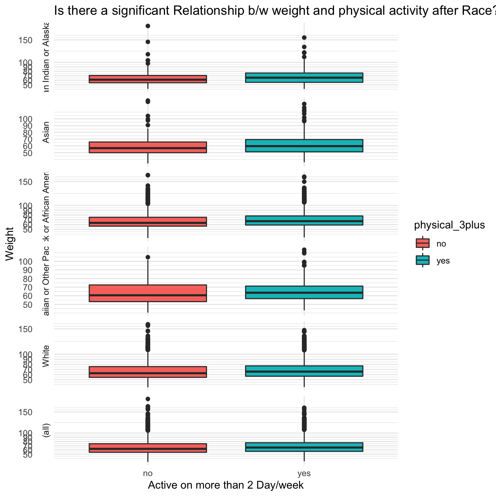
#Is there a relationship between physical_3plus and weight after Gender?
ggplot(subset(yrbss1, !is.na(physical_3plus)), aes(x=physical_3plus, y=weight, group=physical_3plus))+
geom_boxplot(aes(fill=physical_3plus))+
labs(title="Is there a significant Relationship b/w weight and physical activity after Gender?",
x="Active on more than 2 Day/week",
y="Weight")+
scale_y_continuous(breaks=c(50,60,70,80,90,100,150))+
theme_minimal()+
facet_grid(gender~., margins=T, scales="free_y", switch="y")+
NULL
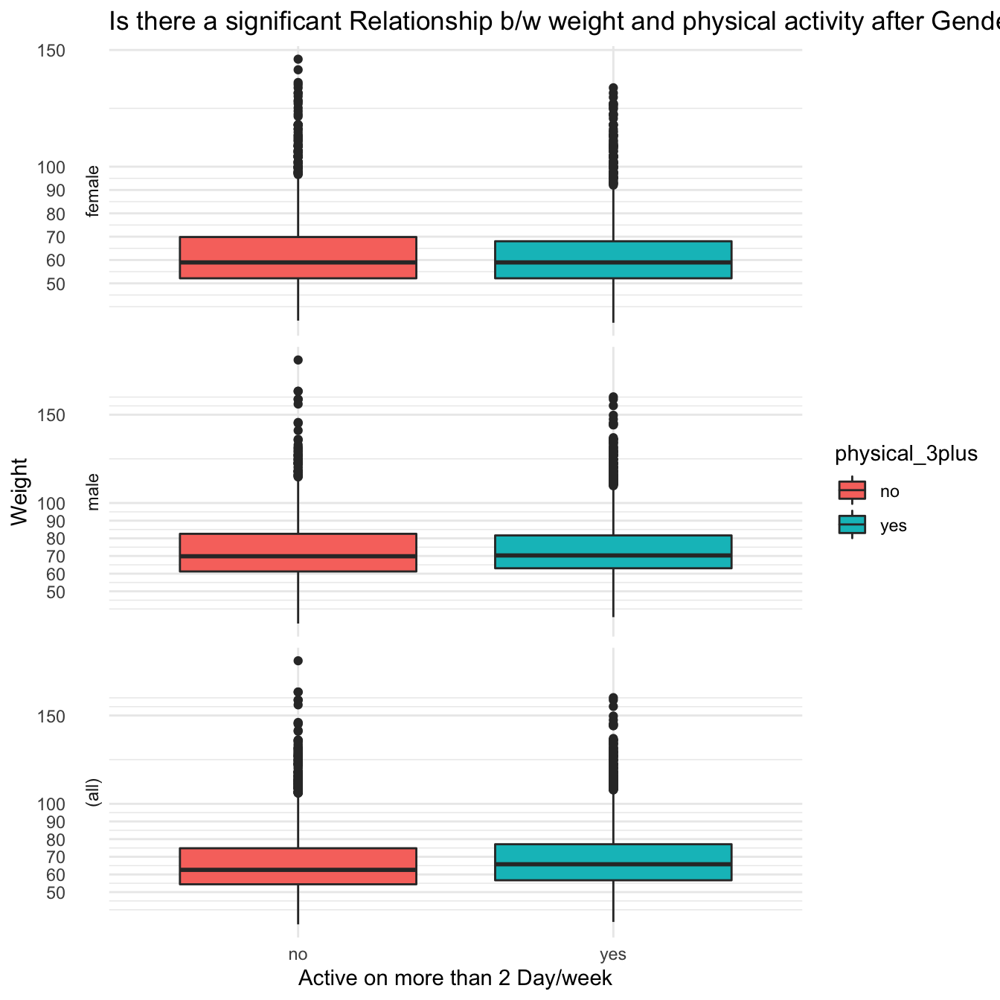
#Is there a relationship between physical_3plus and weight after Race and Gender?
ggplot(subset(yrbss1, !is.na(physical_3plus)), aes(x=physical_3plus, y=weight, group=physical_3plus))+
geom_boxplot(aes(fill=physical_3plus))+
labs(title="Is there a significant Relationship b/w weight and physical activity after Gender?",
x="Active on more than 2 Day/week",
y="Weight")+
scale_y_continuous(breaks=c(50,60,70,80,90,100,150))+
theme_minimal()+
facet_grid(race~gender, margins=T, scales="free_y", switch="y")+
NULL
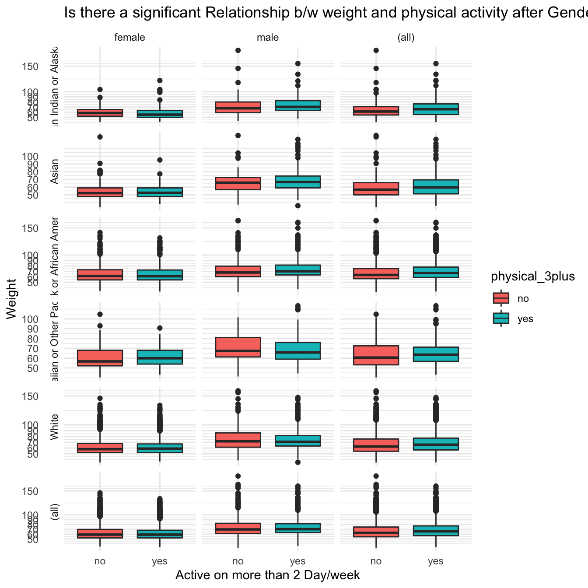
#Relationship between physical_3plus and weight?
ggplot(subset(yrbss1, !is.na(physical_3plus)), aes(x=physical_3plus, y=weight, group=physical_3plus))+
geom_boxplot(aes(fill=physical_3plus))+
labs(title="Is there a significant Relationship b/w weight and physical activity?",
x="Active on more than 2 Day/week",
y="Weight")+
scale_y_continuous(breaks=c(50,60,70,80,90,100,150))+
theme_minimal()+
NULL
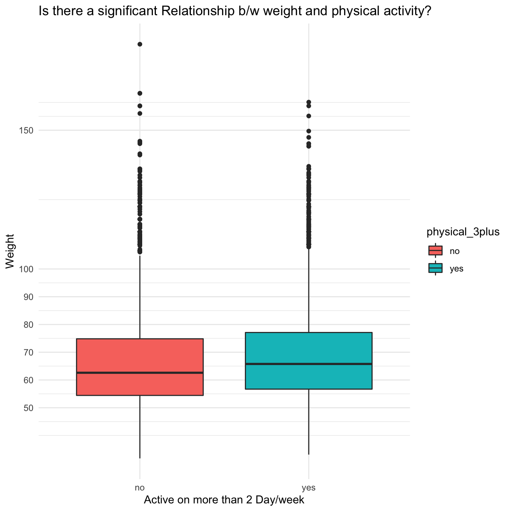
Confidence Interval
Boxplots show how the medians of the two distributions compare, but we can also compare the means of the distributions using either a confidence interval or a hypothesis test. Note that when we calculate the mean/SD, etc weight in these groups using the mean function, we must ignore any missing values by setting the na.rm = TRUE.
yrbss %>%
group_by(physical_3plus) %>%
filter(!is.na(physical_3plus)) %>%
summarise(mean_weight = mean(weight, na.rm = TRUE),
sd_weight = sd(weight, na.rm=TRUE),
count = n(),
se_weight = sd_weight/sqrt(count),
t_critical = qt(0.975, count-1),
margin_of_error = t_critical * se_weight,
lower = mean_weight - t_critical * se_weight,
upper = mean_weight + t_critical * se_weight
)
## # A tibble: 2 x 9
## physical_3plus mean_weight sd_weight count se_weight t_critical
## <chr> <dbl> <dbl> <int> <dbl> <dbl>
## 1 no 66.7 17.6 4404 0.266 1.96
## 2 yes 68.4 16.5 8906 0.175 1.96
## # … with 3 more variables: margin_of_error <dbl>, lower <dbl>, upper <dbl>
There is an observed difference in the means of about 1.77kg (68.44 - 66.67), and we notice that the two confidence intervals do not overlap. It seems that the difference is at least 95% statistically significant. Let us also conduct a hypothesis test.
Hypothesis test with infer
Next, we will introduce a new function, hypothesize, that falls into the infer workflow. You will use this method for conducting hypothesis tests.
But first, we need to initialize the test, which we will save as obs_diff.
#calculating difference in means
obs_diff <- yrbss %>%
specify(weight ~ physical_3plus) %>%
calculate(stat = "diff in means", order = c("yes", "no"))
Notice how you can use the functions specify and calculate again like you did for calculating confidence intervals. Here, though, the statistic you are searching for is the difference in means, with the order being yes - no != 0.
After you have initialized the test, you need to simulate the test on the null distribution, which we will save as null.
#simulation of test on null-distribution to see whether null hypothesis is true
#null distribution is probability distribution of test statistic when the null hypothesis is true
null_dist <- yrbss %>%
specify(weight ~ physical_3plus) %>%
hypothesize(null = "independence") %>%
generate(reps = 1000, type = "permute") %>%
calculate(stat = "diff in means", order = c("yes", "no"))
Here, hypothesize is used to set the null hypothesis as a test for independence, i.e., that there is no difference between the two population means. In one sample cases, the null argument can be set to point to test a hypothesis relative to a point estimate.
Also, note that the type argument within generate is set to permute, which is the argument when generating a null distribution for a hypothesis test.
We can visualize this null distribution with the following code:
ggplot(data = null_dist, aes(x = stat)) +
geom_histogram()+
theme_minimal()+
labs(title = "The Null Distribution of our test statistics",
x="Values of Null Disribution",
y="Occurences")+
theme_minimal()
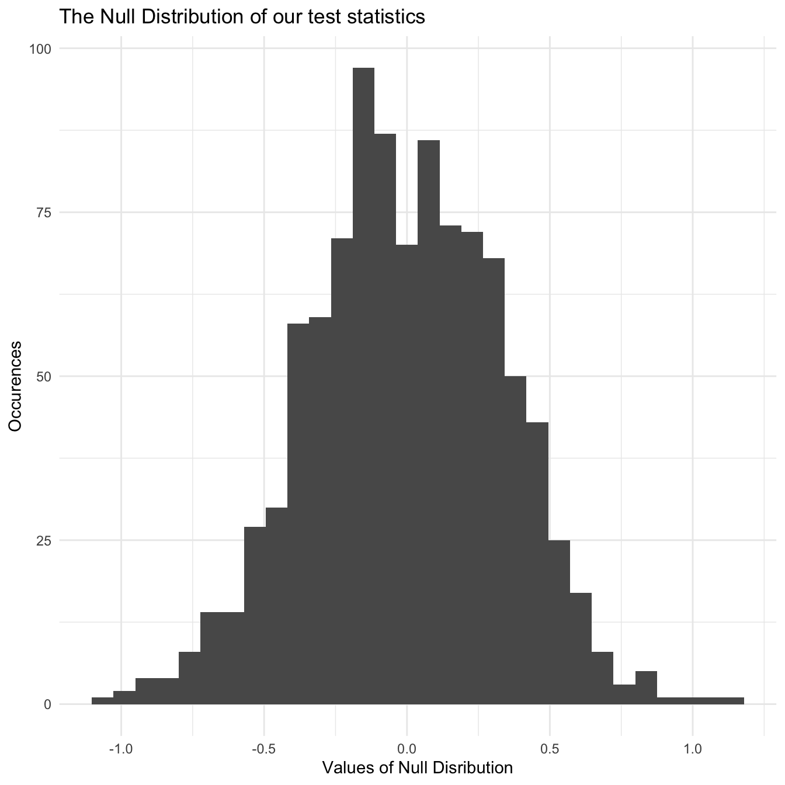
Now that the test is initialized and the null distribution formed, we can visualise to see how many of these null permutations have a difference of at least obs_stat of 1.77?
We can also calculate the p-value for your hypothesis test using the function infer::get_p_value().
null_dist %>% visualize() +
shade_p_value(obs_stat = obs_diff, direction = "two-sided", size=0.5)+
labs(title = "Significant Difference in the mean b/ Weight and Sports", subtitle = "Observed difference in sample means marked in red", x="Difference of means of weight and people who do sport more than twice a week", y = "Count")+
theme_bw()+
theme(plot.title = element_text(size = 15, face = "bold"),
plot.subtitle = element_text(size = 10),
axis.text = element_text(size = 10),
axis.title = element_text(size=10))
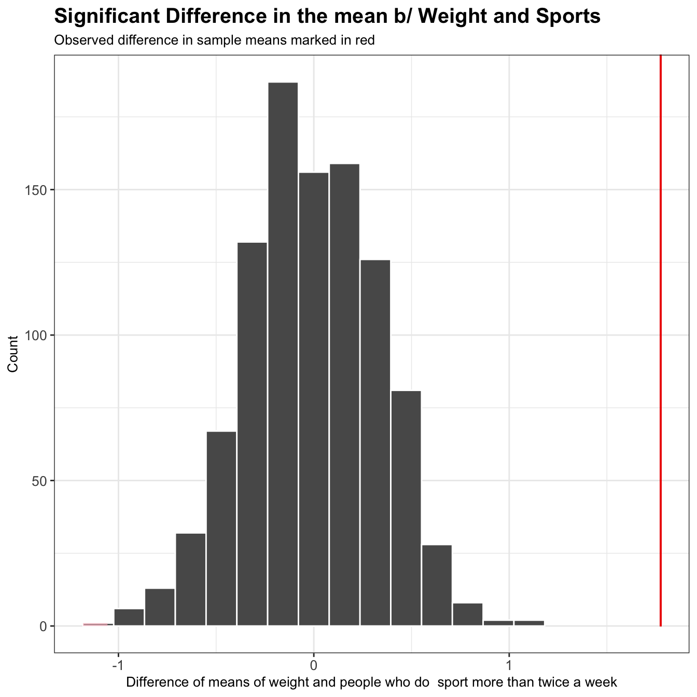
null_dist %>%
get_p_value(obs_stat = obs_diff, direction = "two_sided")
## # A tibble: 1 x 1
## p_value
## <dbl>
## 1 0
This the standard workflow for performing hypothesis tests.
IMDB ratings: Differences between directors

Reproduction of the graph
movies <- read_csv(here::here("data", "movies.csv"))
glimpse(movies)
## Rows: 2,961
## Columns: 11
## $ title <chr> "Avatar", "Titanic", "Jurassic World", "The Aveng…
## $ genre <chr> "Action", "Drama", "Action", "Action", "Action", …
## $ director <chr> "James Cameron", "James Cameron", "Colin Trevorro…
## $ year <dbl> 2009, 1997, 2015, 2012, 2008, 1999, 1977, 2015, 2…
## $ duration <dbl> 178, 194, 124, 173, 152, 136, 125, 141, 164, 93, …
## $ gross <dbl> 7.61e+08, 6.59e+08, 6.52e+08, 6.23e+08, 5.33e+08,…
## $ budget <dbl> 2.37e+08, 2.00e+08, 1.50e+08, 2.20e+08, 1.85e+08,…
## $ cast_facebook_likes <dbl> 4834, 45223, 8458, 87697, 57802, 37723, 13485, 92…
## $ votes <dbl> 886204, 793059, 418214, 995415, 1676169, 534658, …
## $ reviews <dbl> 3777, 2843, 1934, 2425, 5312, 3917, 1752, 1752, 3…
## $ rating <dbl> 7.9, 7.7, 7.0, 8.1, 9.0, 6.5, 8.7, 7.5, 8.5, 7.2,…
Spielberg_Burton <- movies %>%
filter(director %in% c("Steven Spielberg","Tim Burton"))%>%
group_by(director)%>%
summarise(mean=mean(rating),
count=n(),
t_critical=qt(0.975,count-1),
se = sd(rating)/sqrt(count),
margin_of_error = t_critical*se,
ci_low = mean - margin_of_error,
ci_high = mean + margin_of_error)
ggplot(Spielberg_Burton,
aes(x=mean,y=reorder(director,mean),
colour = director))+
geom_errorbar(width=0.1,
aes(xmin=ci_low,xmax=ci_high),
size=1.5)+
geom_point(aes(x=mean),
size = 3)+
geom_rect(aes(xmin = max(ci_low),
xmax=min(ci_high),
ymin=-Inf,ymax=Inf),
fill="gray",
colour="gray",
alpha=0.3)+
theme_bw()+
geom_text(aes(x=mean,
label=round(mean,digits=2)),
size = 5,
vjust = -1,
colour="black")+
geom_text(aes(x=ci_low,
label=round(ci_low,digits=2)),
size=4,
vjust=-1,
colour="black")+
geom_text(aes(x=ci_high,
label=round(ci_high,digits=2)),
size = 4,
vjust=-1,
colour="black")+
labs(title="Do Spielberg and Burton have the same IMDB ratings?",
subtitle = "95% confidence intervals overlap",
x="Mean IMDB Rating",
y ="")+
theme(plot.title = element_text(size = 12, face = "bold"),
axis.text = element_text(size = 8),
axis.title.x = element_text(size=8),
legend.position = "none")
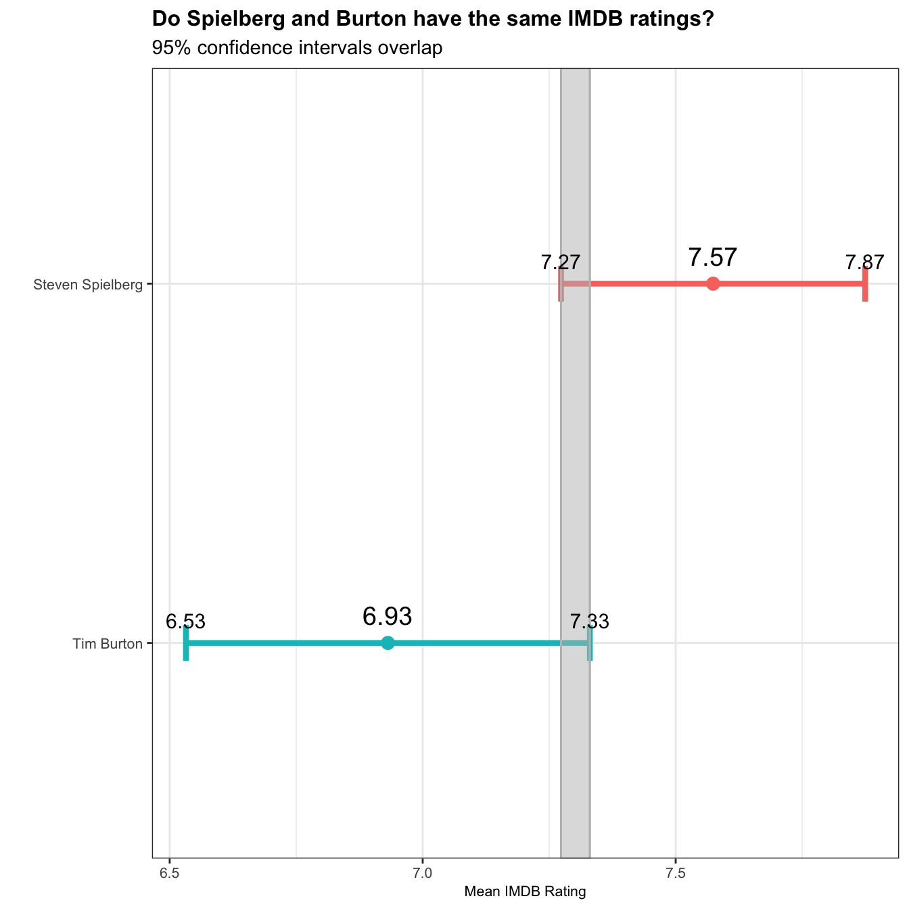
Null hypothesis: Movies of Spielberg and Burton have the same mean IMDB ratings. Alternative hypothesis: Movies of Spielberg and Burton have different mean IMDB ratings. After conducting the t.test command, the t-statistic is 3 and corresponding p-value is 0.01, which is smaller than 0.025. The 95% confidence interval of the mean difference is between 0.16 and 1.13. Therefore, we reject the null and can conclude that the mean IMDB ratings of movies directed by Steven Spielberg and Tim Burton are not equal.
#t-test command
S_B_ratings<- movies%>%
filter(director %in% c("Steven Spielberg", "Tim Burton"))%>%
select(director,rating)
t.test(rating ~ director,
mu=0,
alt = "two.sided",
conf=0.95,
data=S_B_ratings,
var.eq=FALSE)
##
## Welch Two Sample t-test
##
## data: rating by director
## t = 3, df = 31, p-value = 0.01
## alternative hypothesis: true difference in means is not equal to 0
## 95 percent confidence interval:
## 0.16 1.13
## sample estimates:
## mean in group Steven Spielberg mean in group Tim Burton
## 7.57 6.93
#t-test using "infer" package
null_ratings <- S_B_ratings %>%
specify(rating ~ director) %>%
hypothesize(null = "independence") %>%
generate(reps = 1000, type = "permute") %>%
calculate(stat = "diff in means", order = c("Steven Spielberg", "Tim Burton"))
obs_mean_diff <- S_B_ratings %>%
specify(rating ~ director) %>%
calculate(stat = "diff in means", order = c("Steven Spielberg", "Tim Burton"))
null_ratings %>% visualize() +
shade_p_value(obs_stat = obs_mean_diff, direction = "two-sided", size=0.5)+
labs(title = "Differences in Spielberg and Burton movie ratings in a world\n where there is really no difference", subtitle = "Observed difference in sample means marked in red", x="Average ratings of Spielberg movies - Average ratings of Burton movies", y = "Count")+
theme_bw()+
theme(plot.title = element_text(size = 15, face = "bold"),
plot.subtitle = element_text(size = 10),
axis.text = element_text(size = 10),
axis.title = element_text(size=10))+
#geom_rect(aes(xmin=0.642663,
# xmax = Inf,
# ymin=-Inf,
# ymax=Inf),
# fill = "lightyellow",
# colour = "lightyellow",
# alpha=0.05)+
#geom_rect(aes(xmin=-Inf,
# xmax = -0.642663,
# ymin=-Inf,
# ymax=Inf),
# fill = "lightyellow",
# colour = "lightyellow",
# alpha=0.05)+
NULL
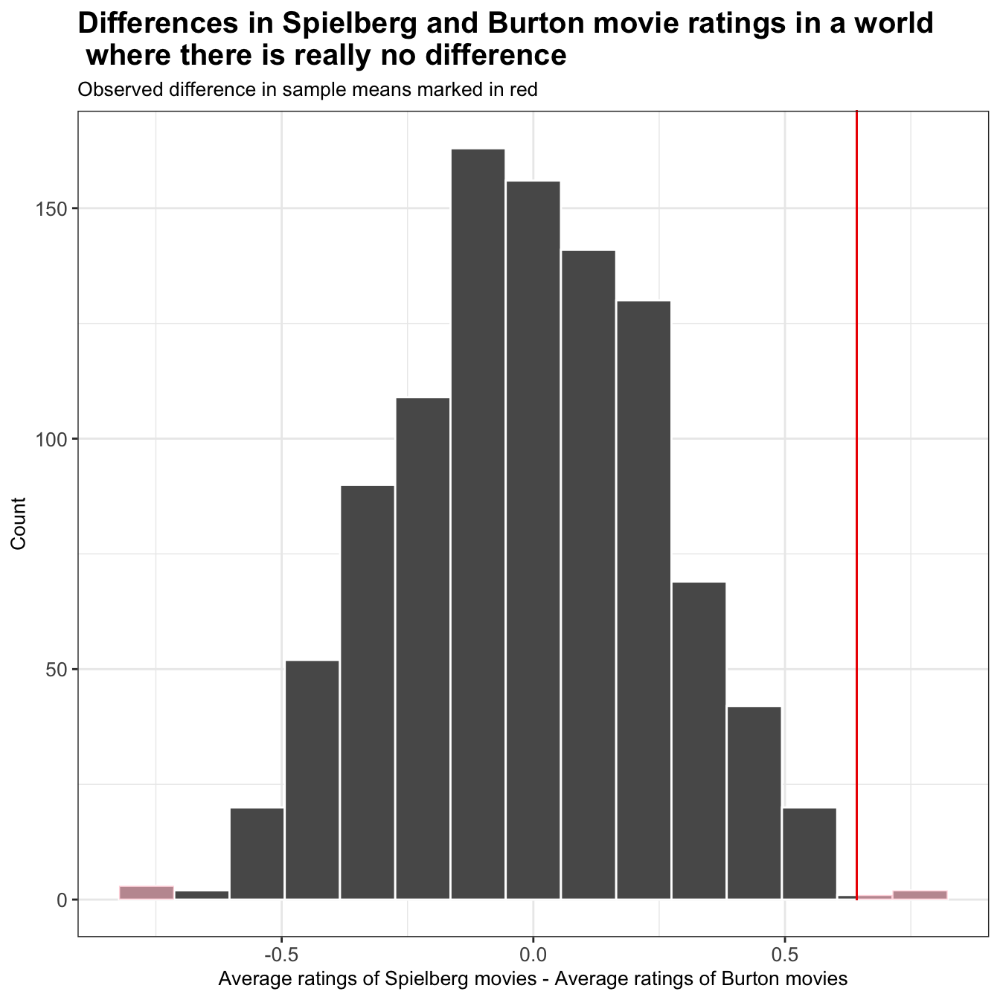
Omega Group plc- Pay Discrimination
At the last board meeting of Omega Group Plc., the headquarters of a large multinational company, the issue was raised that women were being discriminated in the company, in the sense that the salaries were not the same for male and female executives. A quick analysis of a sample of 50 employees (of which 24 men and 26 women) revealed that the average salary for men was about 8,700 higher than for women. This seemed like a considerable difference, so it was decided that a further analysis of the company salaries was warranted.
You are asked to carry out the analysis. The objective is to find out whether there is indeed a significant difference between the salaries of men and women, and whether the difference is due to discrimination or whether it is based on another, possibly valid, determining factor.
Loading the data
omega <- read_csv(here::here("data", "omega.csv"))
glimpse(omega) # examine the data frame
## Rows: 50
## Columns: 3
## $ salary <dbl> 81894, 69517, 68589, 74881, 65598, 76840, 78800, 70033, 63…
## $ gender <chr> "male", "male", "male", "male", "male", "male", "male", "m…
## $ experience <dbl> 16, 25, 15, 33, 16, 19, 32, 34, 1, 44, 7, 14, 33, 19, 24, …
Relationship Salary - Gender ?
The data frame omega contains the salaries for the sample of 50 executives in the company. Can you conclude that there is a significant difference between the salaries of the male and female executives?
Note that you can perform different types of analyses, and check whether they all lead to the same conclusion
. Confidence intervals
. Hypothesis testing
. Correlation analysis
. Regression
Calculate summary statistics on salary by gender. Also, create and print a dataframe where, for each gender, you show the mean, SD, sample size, the t-critical, the SE, the margin of error, and the low/high endpoints of a 95% confidence interval
# Summary Statistics of salary by gender
mosaic::favstats (salary ~ gender, data=omega)
## gender min Q1 median Q3 max mean sd n missing
## 1 female 47033 60338 64618 70033 78800 64543 7567 26 0
## 2 male 54768 68331 74675 78568 84576 73239 7463 24 0
# Dataframe with two rows (male-female) and having as columns gender, mean, SD, sample size,
salary_gender <- omega %>%
group_by(gender) %>% # Make a distinction based on gender
summarise(mean = mean(salary), # Calculate the salary mean
standard_deviation = sd(salary), # Calculate the salary SD
sample_size = count(gender)) # Calculate the sample size
salary_gender
## # A tibble: 2 x 4
## gender mean standard_deviation sample_size
## <chr> <dbl> <dbl> <int>
## 1 female 64543. 7567. 26
## 2 male 73239. 7463. 24
# the t-critical value, the standard error, the margin of error
salary_gender <- omega %>%
group_by(gender) %>% # Make a distinction based on gender
summarise(standard_error = sd(salary) / sqrt(count(gender)), # Calculate the standard error via formula
margin_error = 1.96 * sd(salary)) # Calculate the margin error via formula
salary_gender
## # A tibble: 2 x 3
## gender standard_error margin_error
## <chr> <dbl> <dbl>
## 1 female 1484. 14832.
## 2 male 1523. 14627.
# and the low/high endpoints of a 95% confidence interval
salary_gender <- omega %>%
group_by(gender) %>% # Make a distinction based on gender
summarise(low_endpoint = mean(salary) - 1.96 * sd(salary) / 2, # Calculate low endpoint via formula
high_endpoint = mean(salary) + 1.96 * sd(salary) / 2) # Calculate high endpoint via formula
salary_gender
## # A tibble: 2 x 3
## gender low_endpoint high_endpoint
## <chr> <dbl> <dbl>
## 1 female 57127. 71959.
## 2 male 65926. 80552.
# Summary table
salary_gender <- omega %>%
group_by(gender) %>% # Make a distinction based on gender
summarise(mean = mean(salary), # Calculate the salary mean
standard_deviation = sd(salary), # Calculate the salary SD
sample_size = count(gender), # Calculate the sample size
standard_error = standard_deviation/sqrt(sample_size), # Calculate the standard error via defined variable
margin_error = 1.96 * standard_deviation, # Calculate the margin error via defined variable
low_endpoint = mean - margin_error / 2, # Calculate low endpoint via defined variable
high_endpoint = mean + margin_error / 2) # Calculate high endpoint via defined variable
salary_gender
## # A tibble: 2 x 8
## gender mean standard_deviat… sample_size standard_error margin_error
## <chr> <dbl> <dbl> <int> <dbl> <dbl>
## 1 female 64543. 7567. 26 1484. 14832.
## 2 male 73239. 7463. 24 1523. 14627.
## # … with 2 more variables: low_endpoint <dbl>, high_endpoint <dbl>
What can you conclude from your analysis? A couple of sentences would be enough
On average, women have a lower salary than men by 8696 dollars. In the 68% (1) and 95% (2) confidence interval, the distribution of women salaries tends to be more spread out than men, as both women standard deviation (1) and margin error (2) are higher than men’. However this analysis doesn’t enable to conclude if the salary descripencies are justified or not. To do so, we should look at the experience years.
You can also run a hypothesis testing, assuming as a null hypothesis that the mean difference in salaries is zero, or that, on average, men and women make the same amount of money. You should tun your hypothesis testing using t.test() and with the simulation method from the infer package.
# hypothesis testing using t.test()
salary_gender_test <- t.test(omega$salary,
alternative = c("two.sided"),
mu = 0, paired = FALSE, var.equal = FALSE,
conf.level = 0.95)
salary_gender
## # A tibble: 2 x 8
## gender mean standard_deviat… sample_size standard_error margin_error
## <chr> <dbl> <dbl> <int> <dbl> <dbl>
## 1 female 64543. 7567. 26 1484. 14832.
## 2 male 73239. 7463. 24 1523. 14627.
## # … with 2 more variables: low_endpoint <dbl>, high_endpoint <dbl>
# hypothesis testing using infer package
What can you conclude from your analysis? A couple of sentences would be enough
Relationship Experience - Gender?
At the board meeting, someone raised the issue that there was indeed a substantial difference between male and female salaries, but that this was attributable to other reasons such as differences in experience. A questionnaire send out to the 50 executives in the sample reveals that the average experience of the men is approximately 21 years, whereas the women only have about 7 years experience on average (see table below).
# Summary Statistics of salary by gender
favstats (experience ~ gender, data=omega)
## gender min Q1 median Q3 max mean sd n missing
## 1 female 0 0.25 3.0 14.0 29 7.38 8.51 26 0
## 2 male 1 15.75 19.5 31.2 44 21.12 10.92 24 0
Based on this evidence, can you conclude that there is a significant difference between the experience of the male and female executives? Perform similar analyses as in the previous section. Does your conclusion validate or endanger your conclusion about the difference in male and female salaries?
Based on this evidence
Relationship Salary - Experience ?
Someone at the meeting argues that clearly, a more thorough analysis of the relationship between salary and experience is required before any conclusion can be drawn about whether there is any gender-based salary discrimination in the company.
Analyse the relationship between salary and experience. Draw a scatterplot to visually inspect the data.
omega <- read_csv(here::here("data", "omega.csv"))
salary_gender <- omega %>%
group_by(gender) %>%
ggplot(aes(x = experience, y = salary, group=gender, color=gender)) +
scale_color_manual(values=c(male="blue", female="red")) +
geom_point() +
geom_smooth(se=FALSE) +
labs(x="Years of experience", # x-axis title
y="Yearly salary", # y-axis title
color="Gender trend line",
main="Enhanced Scatter Plot") # Main title
salary_gender
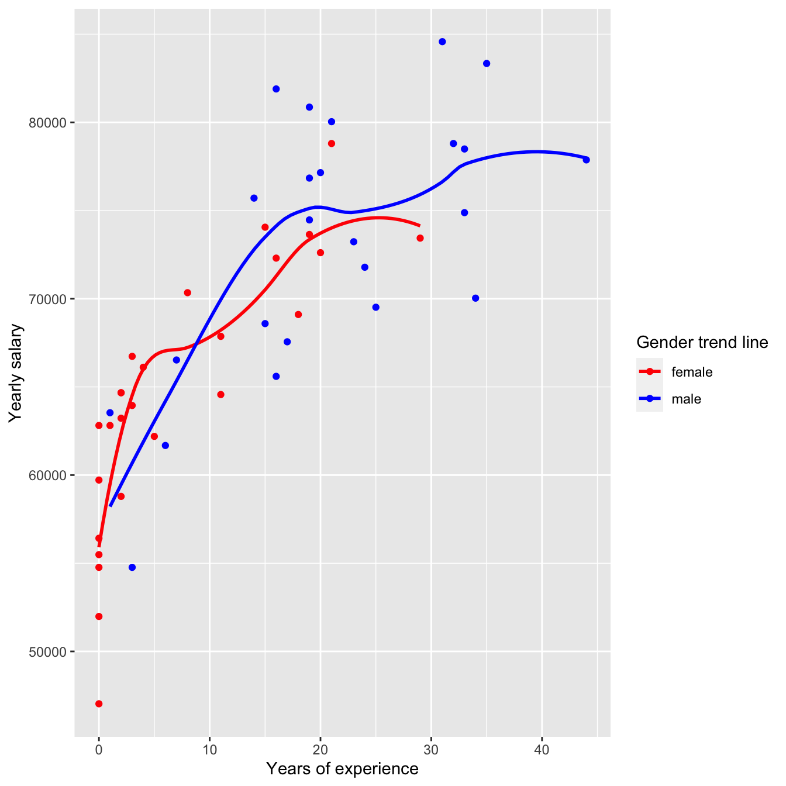
Check correlations between the data
You can use GGally:ggpairs() to create a scatterplot and correlation matrix. Essentially, we change the order our variables will appear in and have the dependent variable (Y), salary, as last in our list. We then pipe the dataframe to ggpairs() with aes arguments to colour by gender and make ths plots somewhat transparent (alpha = 0.3).
omega %>%
select(gender, experience, salary) %>% #order variables they will appear in ggpairs()
ggpairs(aes(colour=gender, alpha = 0.3))+
theme_bw()
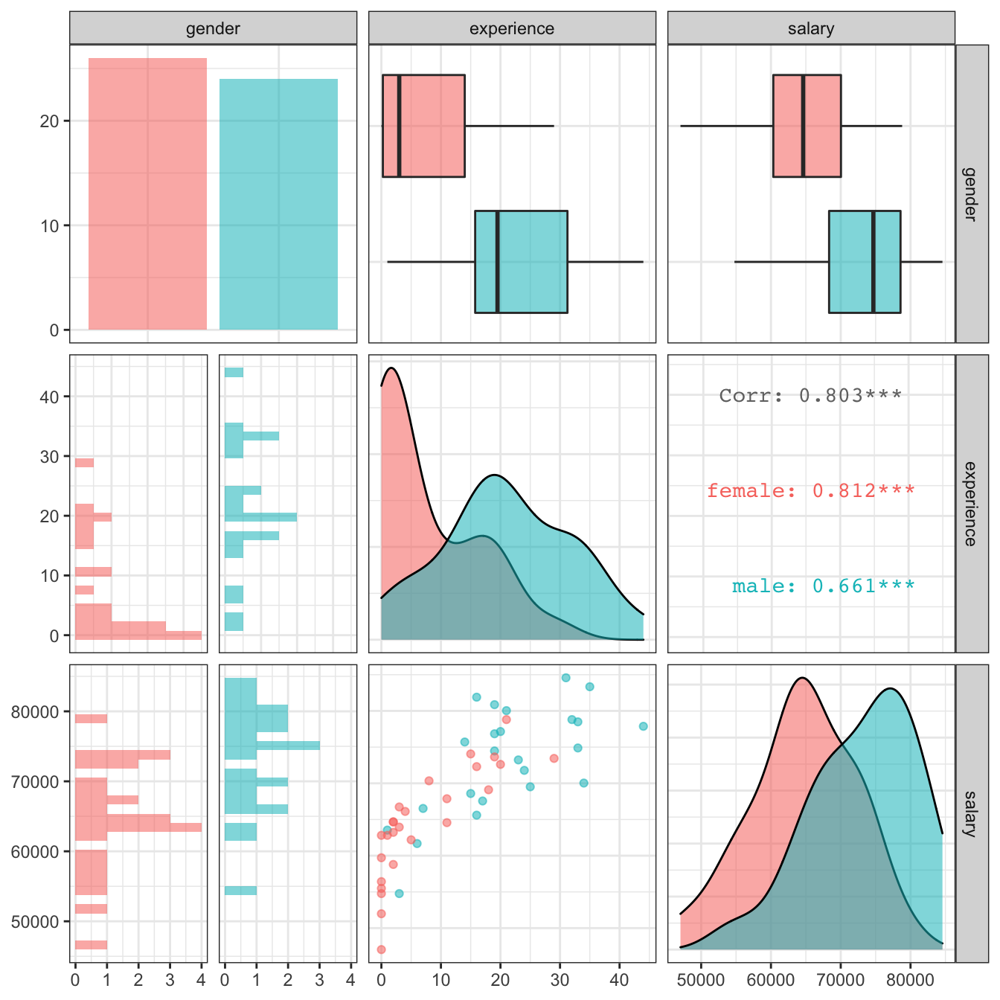
Look at the salary vs experience scatterplot. What can you infer from this plot? Explain in a couple of sentences
Thanks to the salary vs experience scatterplot (but also the trend lines drawn in the previous section), we can infer that there are no strong evidence that for an equivalent number of experiences years, women earn less than man. Indeed from 0 to 9 years of experience, women actually make more money than men - but after 10 years of experience men tend to earn more.
In other words, we cannot really draw a conclusion from this dataset concerning gender inequality. That being said, a bigger population may enable stronger convictions.
Challenge 1: Yield Curve inversion
Every so often, we hear warnings from commentators on the “inverted yield curve” and its predictive power with respect to recessions. An explainer what a inverted yield curve is can be found here. If you’d rather listen to something, here is a great podcast from NPR on yield curve indicators
In addition, many articles and commentators think that, e.g., Yield curve inversion is viewed as a harbinger of recession. One can always doubt whether inversions are truly a harbinger of recessions, and use the attached parable on yield curve inversions.
In our case we will look at US data and use the FRED database to download historical yield curve rates, and plot the yield curves since 1999 to see when the yield curves flatten. If you want to know more, a very nice article that explains the yield curve is and its inversion can be found here. At the end of this chllenge you should produce this chart
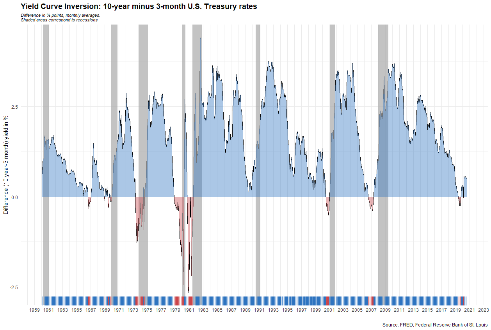
First, we will use the tidyquant package to download monthly rates for different durations.
# Get a list of FRED codes for US rates and US yield curve; choose monthly frequency
# to see, eg., the 3-month T-bill https://fred.stlouisfed.org/series/TB3MS
tickers <- c('TB3MS', # 3-month Treasury bill (or T-bill)
'TB6MS', # 6-month
'GS1', # 1-year
'GS2', # 2-year, etc....
'GS3',
'GS5',
'GS7',
'GS10',
'GS20',
'GS30') #.... all the way to the 30-year rate
# Turn FRED codes to human readable variables
myvars <- c('3-Month Treasury Bill',
'6-Month Treasury Bill',
'1-Year Treasury Rate',
'2-Year Treasury Rate',
'3-Year Treasury Rate',
'5-Year Treasury Rate',
'7-Year Treasury Rate',
'10-Year Treasury Rate',
'20-Year Treasury Rate',
'30-Year Treasury Rate')
maturity <- c('3m', '6m', '1y', '2y','3y','5y','7y','10y','20y','30y')
# by default R will sort these maturities alphabetically; but since we want
# to keep them in that exact order, we recast maturity as a factor
# or categorical variable, with the levels defined as we want
maturity <- factor(maturity, levels = maturity)
# Create a lookup dataset
mylookup<-data.frame(symbol=tickers,var=myvars, maturity=maturity)
# Take a look:
mylookup %>%
knitr::kable()
| TB3MS |
3-Month Treasury Bill |
3m |
| TB6MS |
6-Month Treasury Bill |
6m |
| GS1 |
1-Year Treasury Rate |
1y |
| GS2 |
2-Year Treasury Rate |
2y |
| GS3 |
3-Year Treasury Rate |
3y |
| GS5 |
5-Year Treasury Rate |
5y |
| GS7 |
7-Year Treasury Rate |
7y |
| GS10 |
10-Year Treasury Rate |
10y |
| GS20 |
20-Year Treasury Rate |
20y |
| GS30 |
30-Year Treasury Rate |
30y |
df <- tickers %>% tidyquant::tq_get(get="economic.data",
from="1960-01-01") # start from January 1960
glimpse(df)
## Rows: 6,774
## Columns: 3
## $ symbol <chr> "TB3MS", "TB3MS", "TB3MS", "TB3MS", "TB3MS", "TB3MS", "TB3MS",…
## $ date <date> 1960-01-01, 1960-02-01, 1960-03-01, 1960-04-01, 1960-05-01, 1…
## $ price <dbl> 4.35, 3.96, 3.31, 3.23, 3.29, 2.46, 2.30, 2.30, 2.48, 2.30, 2.…
Our dataframe df has three columns (variables):
symbol: the FRED database ticker symboldate: already a date objectprice: the actual yield on that date
The first thing would be to join this dataframe df with the dataframe mylookup so we have a more readable version of maturities, durations, etc.
yield_curve <-left_join(df,mylookup,by="symbol")
Plotting the yield curve
This may seem long but it should be easy to produce the following three plots
Yields on US rates by duration since 1960
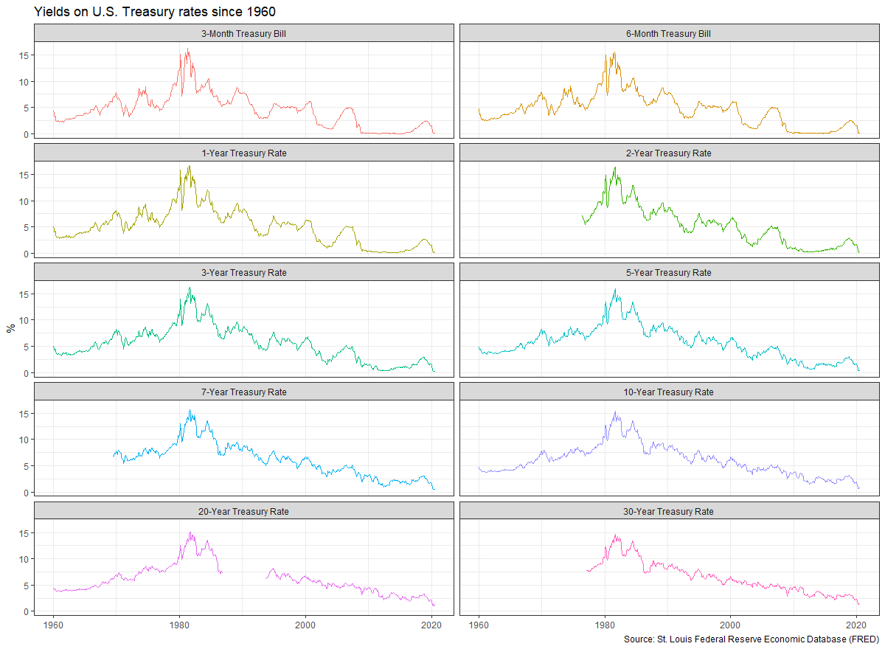
#Plotting the graph with years on the x-axis and yields on the y-axis
ggplot(yield_curve, aes(x = date, y = price, color = maturity)) +
#Facet_wrapping by maturity and var since the levels of maturity are ordered
facet_wrap(maturity ~ var, ncol = 2) +
#Choosing the plot type to be a line graph
geom_line() +
#Black and white theme
theme_bw() +
#Setting the x-axis labels to be in date format in years
scale_x_date(labels=date_format("%Y")) +
#Removing legend and bolding plot title
theme(legend.position = "none", plot.title = element_text(face = "bold")) +
#Setting plot and axis titiles
labs(y = '%', title = 'Yields on U.S. Treasury rates since 1960', caption = "Source: St. Louis Federal Reserve Economic Database (FRED)", x = "")
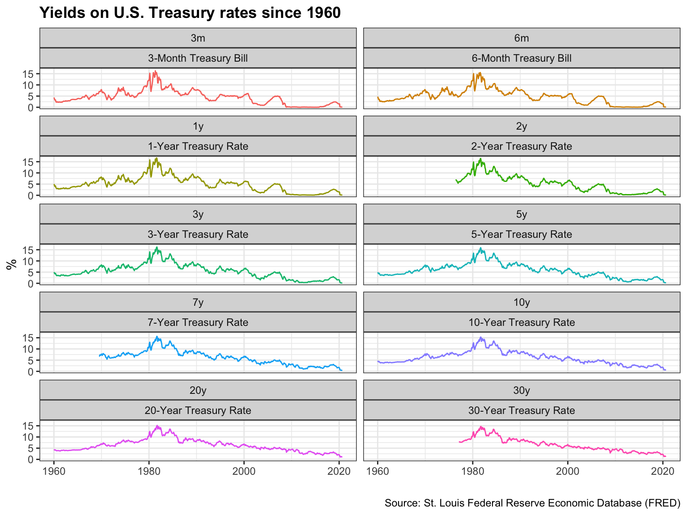
Monthly yields on US rates by duration since 1999 on a year-by-year basis
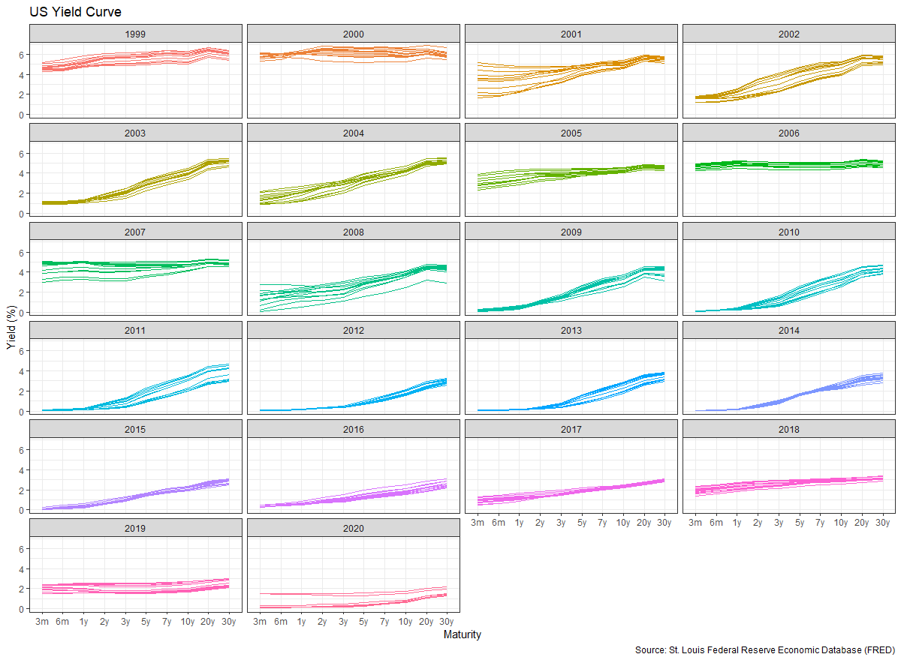
#Creating new data frame with years >= 1999 and new year and month variables
yield_curve_with_years <- yield_curve %>%
filter(date>="1999-01-01") %>%
mutate(year = year(date), month = month(date))
#Plotting the graph with the different maturities on x-axis, yields on y-axis and grouping the yields by month
ggplot(yield_curve_with_years, aes(x = maturity, y = price, color = year, group = month)) +
#Facet wrap the plot by year
facet_wrap(~year, ncol = 4) +
#Choosing the plot to be a line graph
geom_line() +
#Choosing a black and white theme
theme_bw() +
#Removing plot legend
theme(legend.position = "none") +
#Setting plot labels
labs(y = 'Yield (%)', title = 'US Yield Curve', caption = "Source: St. Louis Federal Reserve Economic Database (FRED)", x = "Maturity") +
#Bolding plot title
theme(plot.title = element_text(face = "bold"))
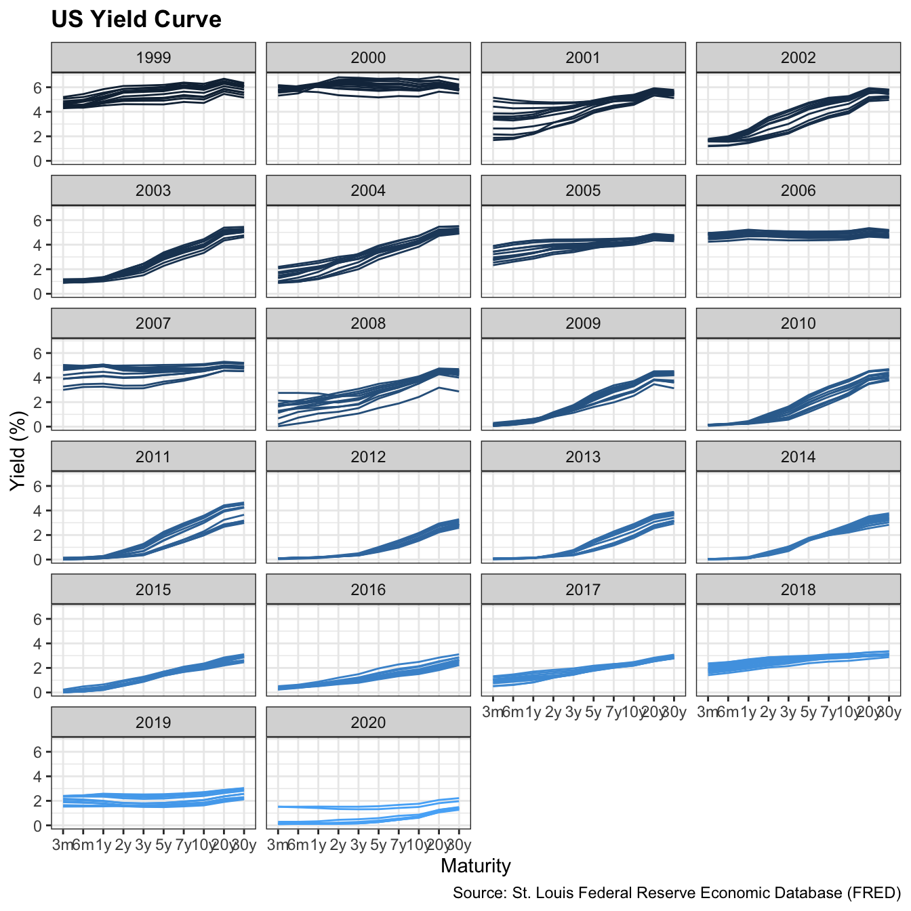
3-month and 10-year yields since 1999
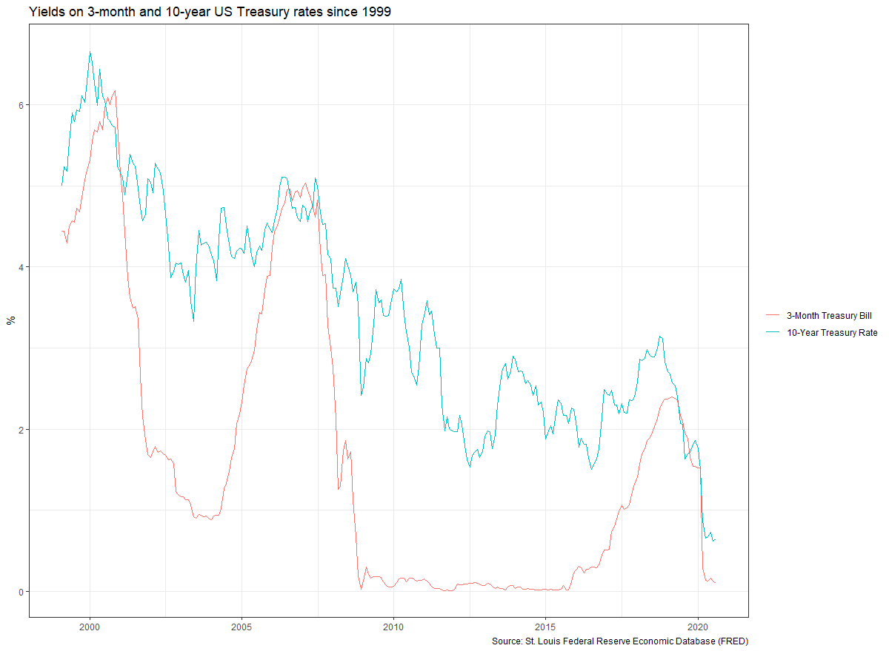
#Creating new data frame with only 3m Treasury Bill and 10y Treasury Note, and years since 1999
yield_curve_3m_10m <- yield_curve %>%
filter(date>="1999-01-01", (maturity == "3m" | maturity == "10y"))
#Plotting graph with date on the x-axis and yields on the y-axis, colors grouped by var
ggplot(yield_curve_3m_10m, aes(x = date, y = price, color = var)) +
#Choosing plot to be a line graph
geom_line() +
#Choosing black and white theme
theme_bw() +
#Removing legend title and bolding plot title
theme(legend.title = element_blank(), plot.title = element_text(face = "bold")) +
#Setting plot and axis titles
labs(y = '%', title = 'Yields on 3-month and 10-year US Treasury rates since 1999',
caption = "Source: St. Louis Federal Reserve Economic Database (FRED)", x = "") +
#Setting x-axis labels to be in 5 year increments
scale_x_date(date_breaks="5 years",labels=date_format("%Y"), limits = c(as.Date("1999-01-01"),NA))
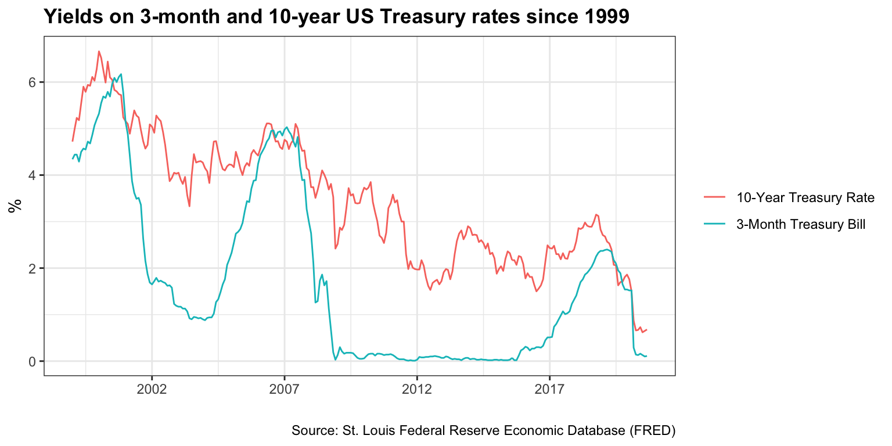
According to Wikipedia’s list of recession in the United States, since 1999 there have been two recession in the US: between Mar 2001–Nov 2001 and between Dec 2007–June 2009. Does the yield curve seem to flatten before these recessions? Can a yield curve flattening really mean a recession is coming in the US? Since 1999, when did short-term (3 months) yield more than longer term (10 years) debt?
Besides calculating the spread (10year - 3months), there are a few things we need to do to produce our final plot
- Setup data for US recessions
- Superimpose recessions as the grey areas in our plot
- Plot the spread between 30 years and 3 months as a blue/red ribbon, based on whether the spread is positive (blue) or negative(red)
- For the first, the code below creates a dataframe with all US recessions since 1946
# get US recession dates after 1946 from Wikipedia
# https://en.wikipedia.org/wiki/List_of_recessions_in_the_United_States
recessions <- tibble(
from = c("1948-11-01", "1953-07-01", "1957-08-01", "1960-04-01", "1969-12-01", "1973-11-01", "1980-01-01","1981-07-01", "1990-07-01", "2001-03-01", "2007-12-01"),
to = c("1949-10-01", "1954-05-01", "1958-04-01", "1961-02-01", "1970-11-01", "1975-03-01", "1980-07-01", "1982-11-01", "1991-03-01", "2001-11-01", "2009-06-01")
) %>%
mutate(From = ymd(from),
To=ymd(to),
duration_days = To-From)
recessions
## # A tibble: 11 x 5
## from to From To duration_days
## <chr> <chr> <date> <date> <drtn>
## 1 1948-11-01 1949-10-01 1948-11-01 1949-10-01 334 days
## 2 1953-07-01 1954-05-01 1953-07-01 1954-05-01 304 days
## 3 1957-08-01 1958-04-01 1957-08-01 1958-04-01 243 days
## 4 1960-04-01 1961-02-01 1960-04-01 1961-02-01 306 days
## 5 1969-12-01 1970-11-01 1969-12-01 1970-11-01 335 days
## 6 1973-11-01 1975-03-01 1973-11-01 1975-03-01 485 days
## 7 1980-01-01 1980-07-01 1980-01-01 1980-07-01 182 days
## 8 1981-07-01 1982-11-01 1981-07-01 1982-11-01 488 days
## 9 1990-07-01 1991-03-01 1990-07-01 1991-03-01 243 days
## 10 2001-03-01 2001-11-01 2001-03-01 2001-11-01 245 days
## 11 2007-12-01 2009-06-01 2007-12-01 2009-06-01 548 days
- To add the grey shaded areas corresponding to recessions, we use
geom_rect()
- to colour the ribbons blue/red we must see whether the spread is positive or negative and then use
geom_ribbon(). You should be familiar with this from last week’s homework on the excess weekly/monthly rentals of Santander Bikes in London.
#Creating new data frame with only 3m and 10y maturities, pivoting wider and creating a new variable difference
yield_curve_final <- yield_curve %>%
filter((maturity == "3m" | maturity == "10y")) %>%
select(c("date","price","var")) %>%
pivot_wider(names_from = "var", values_from = "price") %>%
mutate(difference=`10-Year Treasury Rate` - `3-Month Treasury Bill`)
#Plotting graph with date on the x-axis and the difference on the y-axis
ggplot(yield_curve_final, aes(x=date, y=difference)) +
#Choosing plot to be a line graph
geom_line() +
#Creating title and labels for graph
labs(y = 'Difference (10 year-3 month) yield in %', title = 'Yield Curve Inversion: 10-year minus 3-month U.S. Treasury Rates',
caption = "Source: St. Louis Federal Reserve Economic Database (FRED)",
subtitle = "Difference in % points, monthly averages. \nShaded areas correspond to recessions", x="") +
#Selecting black and white theme
theme_bw() +
#Fixing x-axis labels and limits
scale_x_date(date_breaks="2 years",labels=date_format("%Y"), limits = c(as.Date("1959-01-01"),as.Date("2023-01-01"))) +
#Bolding plot title and removing legend
theme(plot.title = element_text(face = "bold"), legend.position = "none") +
#Creating y-intercept line at 0
geom_hline(yintercept=0,color="black") +
#Creating rugs at bottom of plot
geom_rug(aes(colour=ifelse(difference >= 0,"steelblue2","red")), sides="b",alpha=0.5, position = "jitter") +
#Plotting the recession grey areas on plot
geom_rect(data=filter(recessions), inherit.aes=F, aes(xmin=From, xmax=To, ymin=-Inf, ymax=+Inf), fill='grey', alpha=0.7) +
#Plotting graph ribbons
geom_ribbon(aes(ymin = difference, ymax = pmin(difference, 0)), fill= "steelblue2", alpha=0.5) +
geom_ribbon(aes(ymin = 0, ymax = pmin(difference, 0)),fill = "red", alpha=0.5)

Challenge 2:GDP components over time and among countries
At the risk of oversimplifying things, the main components of gross domestic product, GDP are personal consumption (C), business investment (I), government spending (G) and net exports (exports - imports). You can read more about GDP and the different approaches in calculating at the Wikipedia GDP page.
The GDP data we will look at is from the United Nations’ National Accounts Main Aggregates Database, which contains estimates of total GDP and its components for all countries from 1970 to today. We will look at how GDP and its components have changed over time, and compare different countries and how much each component contributes to that country’s GDP. The file we will work with is GDP and its breakdown at constant 2010 prices in US Dollars and it has already been saved in the Data directory. Have a look at the Excel file to see how it is structured and organised
UN_GDP_data <- read_excel(here::here("data", "Download-GDPconstant-USD-countries.xls"), # Excel filename
sheet="Download-GDPconstant-USD-countr", # Sheet name
skip=2) # Number of rows to skip
The first thing you need to do is to tidy the data, as it is in wide format and you must make it into long, tidy format. Please express all figures in billions (divide values by 1e9, or \(10^9\)), and you want to rename the indicators into something shorter.
#pivot_longer to transform data from wide format to long
tidy_GDP_data <- UN_GDP_data %>% pivot_longer(-c(CountryID, Country, IndicatorName), #which columns to preserve
values_to = "Value", #the name of values column
names_to = "year") %>% #column with names of previous columns with years
filter(!is.na(Value)) %>% #remain only finite values
mutate(bln_value = Value/10^9, #divide by 1 bln to get bln values
year = as.numeric(year)) #transform year from chr to numeric
#see columns type of df
glimpse(tidy_GDP_data)
## Rows: 161,459
## Columns: 6
## $ CountryID <dbl> 4, 4, 4, 4, 4, 4, 4, 4, 4, 4, 4, 4, 4, 4, 4, 4, 4, 4, 4…
## $ Country <chr> "Afghanistan", "Afghanistan", "Afghanistan", "Afghanist…
## $ IndicatorName <chr> "Final consumption expenditure", "Final consumption exp…
## $ year <dbl> 1970, 1971, 1972, 1973, 1974, 1975, 1976, 1977, 1978, 1…
## $ Value <dbl> 5.56e+09, 5.33e+09, 5.20e+09, 5.75e+09, 6.15e+09, 6.32e…
## $ bln_value <dbl> 5.56, 5.33, 5.20, 5.75, 6.15, 6.32, 6.37, 6.90, 7.09, 6…
# Let us compare GDP components for these 3 countries
country_list <- c("United States","India", "Germany")
First, can you produce this plot?
of course!
library(car)
options(scipen = 999)
#view photo
knitr::include_graphics(here::here("images", "gdp1.png"), error = FALSE)
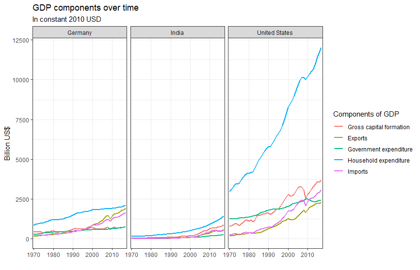
#recode is used to rename text rows: first argument is the column where we want to change names, then all replacements in rows
tidy_GDP_data$IndicatorName <- car::recode(tidy_GDP_data$IndicatorName,
"'Exports of goods and services' = 'Exports';
'Imports of goods and services' = 'Imports';
'General government final consumption expenditure' = 'Government expenditure';
'Household consumption expenditure (including Non-profit institutions serving households)' = 'Household expenditure'")
gdp_components <- c("Gross capital formation", "Exports", "Government expenditure", "Household expenditure", "Imports")
gdp_data_filtered <- tidy_GDP_data %>%
filter(Country %in% country_list & #filter data
IndicatorName %in% gdp_components) %>%
mutate(IndicatorName = factor(IndicatorName, levels = gdp_components, #create labels for gdp components
labels = gdp_components))
ggplot(gdp_data_filtered,
aes(x = year, y = bln_value, color = IndicatorName)) + #main set up
geom_line(aes(group = IndicatorName)) + #add lines by indicator names
facet_wrap(~Country) + #add tiles by country
scale_x_continuous(breaks = seq(1970, 2020, by = 10)) + #make scale from 1970 to 2020 by step = 10
theme_bw() + #specify white theme
labs(title = "GDP Components over time", #provide names for title, subtitle, x,y
subtitle = "In constant 2010 USD",
x = "",
y = "Billion US$",
colour = "Components of GDP") + #change the legend name
theme(plot.title = element_text(face = "bold"), #make title bold
panel.grid.minor = element_blank()) #get rid of minor lines in the background
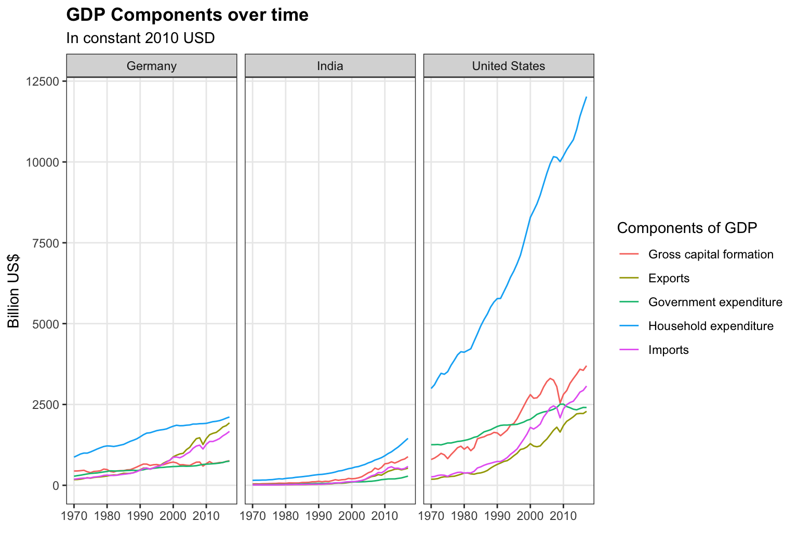
Secondly, recall that GDP is the sum of Household Expenditure (Consumption C), Gross Capital Formation (business investment I), Government Expenditure (G) and Net Exports (exports - imports). Even though there is an indicator Gross Domestic Product (GDP) in your dataframe, I would like you to calculate it given its components discussed above.
What is the % difference between what you calculated as GDP and the GDP figure included in the dataframe?
gdp_percentage_diff <- tidy_GDP_data %>%
pivot_wider(names_from = IndicatorName,
values_from = bln_value,
id_cols = c(Country, year)) %>% #transform groups from one column to multiple columns
mutate(GDP_calculated = `Gross capital formation` +
`Exports` +
`Government expenditure` +
`Household expenditure` -
`Imports`,
GDP_percentage_difference = GDP_calculated / `Gross Domestic Product (GDP)` - 1) %>%
group_by(Country) %>%
filter(!is.na(GDP_percentage_difference)) %>%
summarise(mean_diff = abs(mean(GDP_percentage_difference, na.rm = T) * 100)) %>%
arrange(desc(mean_diff)) #descending sort by mean difference %
gdp_percentage_diff %>%
head(n = 25) %>% #select top 25 countries (sorted previously by arrange)
ggplot(aes(y = reorder(Country, mean_diff), #sort countries by mean difference
x = mean_diff)) +
geom_col(fill = "#00B81F") +
theme_bw() +
labs(x = "Country",
y = "Absolute mean difference",
title = "Yemen has problems with calculating GDP",
subtitle = "Top 25 countries that have the highest mean absolute difference \n between calculated GDP and GDP figure ")
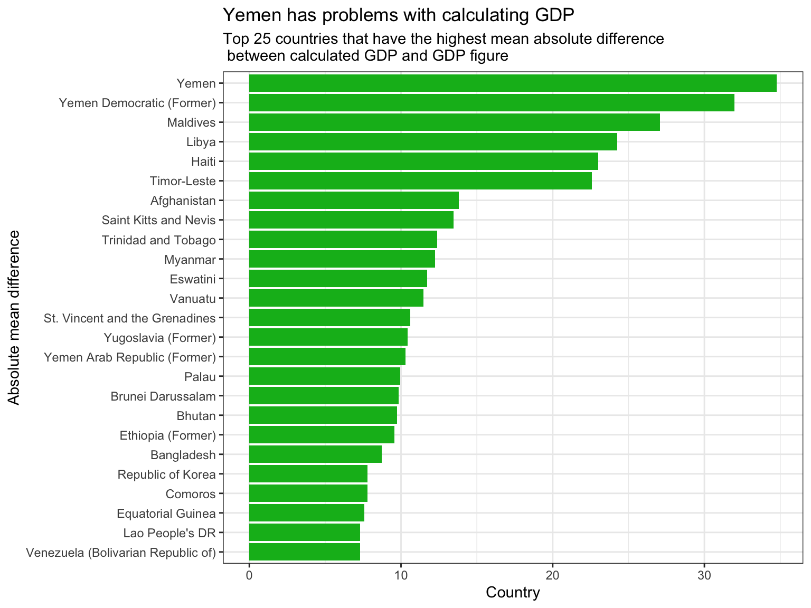
#average mean by all countries
mean(abs(gdp_percentage_diff$mean_diff))
## [1] 3.73
Yemen has the highest percentage difference between calculated GDP and provided GDP in the figure and deviates by 34% from the figure. Moreover, other countries in this list are located either in the islands, in the Middle East or in Africa.
The average absolute mean difference percentage among all countries is 14.22% which is quite high. However, our top-25 contributes a lot to this figure.
knitr::include_graphics(here::here("images", "gdp2.png"), error = FALSE)

gdp_data_filtered2 <- gdp_data_filtered %>%
pivot_wider(names_from = IndicatorName,
values_from = bln_value,
id_cols = c(Country, year)) %>%
mutate(`Net Exports` = Exports - Imports,
Imports = - Imports) %>% #we used 2 mutates because of structure of dplyr: it calcs simultaneously
mutate(GDP = rowSums(.[3:7]),
`Household expenditure` = `Household expenditure` / GDP,
`Government expenditure` = `Government expenditure` / GDP,
`Gross capital formation` = `Gross capital formation` / GDP,
`Net Exports` = `Net Exports` / GDP) %>%
select(-c(Exports, Imports, GDP)) %>%
pivot_longer(-c(Country, year), #which columns to preserve
values_to = "percentage", #the name of values column
names_to = "IndicatorName")
ggplot(gdp_data_filtered2,
aes(x = year, y = percentage, color = IndicatorName)) + #main set up
geom_line(aes(group = IndicatorName)) + #add lines by indicator names
facet_wrap(~Country) + #add tiles by country
scale_x_continuous(breaks = seq(1970, 2020, by = 10)) + #make scale from 1970 to 2020 by step = 10
theme_bw() + #specify white theme
labs(title = "GDP and its breakdown at constant 2010 prices in US Dollars", #provide names for title, subtitle, x,y
caption = "Source: United Nations, https://unstats.un.org/unsd/snaama/Downloads",
x = "",
y = "proportion",
colour = "") + #change the legend name
theme(panel.grid.minor = element_blank()) #get rid of minor lines in the background
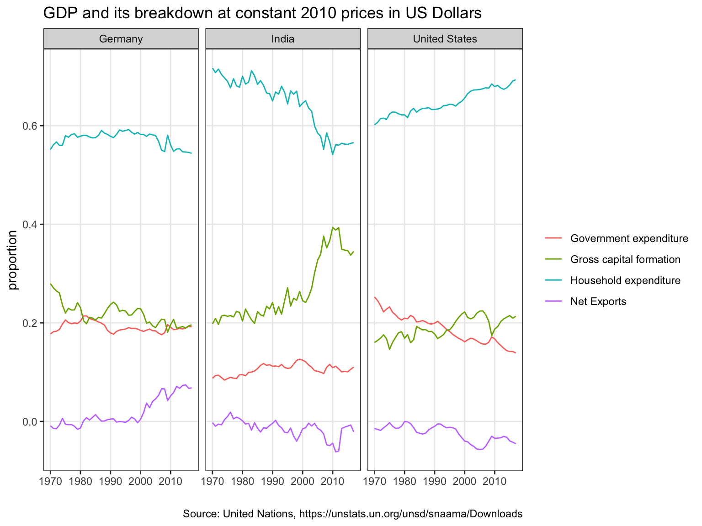
What is this last chart telling you? Can you explain in a couple of paragraphs the different dynamic among these three countries?
First of all, Germany and United States are developed countries which means that they should have similar patterns but some components of GDP demonstrate otherwise, while India is an emerging country. In our developed countries investment and government components of GDP intersected several times while in India there was a huge difference between them in 1970s and has increased during the 50-year period. The investment share in both developed countries is at the same level - 20% of total GDP - while in India it has almost doubled during the period.
Household expenditure in Germany and India has decreased during the discussed period but in America there was a reverse situation - consumer spending proportion has risen. Furthermore, household expenditure is still the largest part of GDP in all three countries.
Also, it is very interesting to consider Net exports proportion. India and USA has the similar movement pattern in this component: it moves in one direction in both countries and also is negative which means that imports outweigh exports. In Germany net exports proportion was around 0% but since 2000 it has increased almost to 10% of GDP.
If you want to, please change country_list <- c("United States","India", "Germany") to include your own country and compare it with any two other countries you like
library(gridExtra)
#I would like to speculate this task and advance further.
#I will create a function that can draw the graph with any countries I would like to compare.
UN_GDP_data <- read_excel(here::here("data", "Download-GDPconstant-USD-countries.xls"), # Excel filename
sheet="Download-GDPconstant-USD-countr", # Sheet name
skip=2) # Number of rows to skip
# create a function where you plug in
compare_countries_by_gdp <- function(UN_GDP_data, country_list) {
#pivot_longer to transform data from wide format to long
tidy_GDP_data <- UN_GDP_data %>% pivot_longer(-c(CountryID, Country, IndicatorName), #which columns to preserve
values_to = "Value", #the name of values column
names_to = "year") %>% #column with names of previous columns with years
filter(!is.na(Value)) %>% #remain only finite values
mutate(bln_value = Value/10^9, #divide by 1 bln to get bln values
year = as.numeric(year)) #transform year from chr to numeric
#recode is used to rename text rows: first argument is the column where we want to change names, then all replacements in rows
tidy_GDP_data$IndicatorName <- car::recode(tidy_GDP_data$IndicatorName,
"'Exports of goods and services' = 'Exports';
'Imports of goods and services' = 'Imports';
'General government final consumption expenditure' = 'Government expenditure';
'Household consumption expenditure (including Non-profit institutions serving households)' = 'Household expenditure'")
gdp_components <- c("Gross capital formation", "Exports", "Government expenditure", "Household expenditure", "Imports")
gdp_data_filtered <- tidy_GDP_data %>%
filter(Country %in% country_list & #filter data
IndicatorName %in% gdp_components) %>%
mutate(IndicatorName = factor(IndicatorName, levels = gdp_components, #create labels for gdp components
labels = gdp_components))
gdp_value <- ggplot(gdp_data_filtered,
aes(x = year, y = bln_value, color = IndicatorName)) + #main set up
geom_line(aes(group = IndicatorName)) + #add lines by indicator names
facet_wrap(~Country) + #add tiles by country
scale_x_continuous(breaks = seq(1970, 2020, by = 10)) + #make scale from 1970 to 2020 by step = 10
theme_bw() + #specify white theme
labs(title = "GDP Components over time", #provide names for title, subtitle, x,y
subtitle = "In constant 2010 USD",
x = "",
y = "Billion US$",
colour = "Components of GDP") + #change the legend name
theme(plot.title = element_text(face = "bold"), #make title bold
panel.grid.minor = element_blank()) #get rid of minor lines in the background
gdp_data_filtered2 <- gdp_data_filtered %>%
pivot_wider(names_from = IndicatorName,
values_from = bln_value,
id_cols = c(Country, year)) %>%
mutate(`Net Exports` = Exports - Imports,
Imports = - Imports) %>% #we used 2 mutates because of structure of dplyr: it calcs simultaneously
mutate(GDP = rowSums(.[3:7]),
`Household expenditure` = `Household expenditure` / GDP,
`Government expenditure` = `Government expenditure` / GDP,
`Gross capital formation` = `Gross capital formation` / GDP,
`Net Exports` = `Net Exports` / GDP) %>%
select(-c(Exports, Imports, GDP)) %>%
pivot_longer(-c(Country, year), #which columns to preserve
values_to = "percentage", #the name of values column
names_to = "IndicatorName")
gdp_prop <- ggplot(gdp_data_filtered2,
aes(x = year, y = percentage, color = IndicatorName)) + #main set up
geom_line(aes(group = IndicatorName)) + #add lines by indicator names
facet_wrap(~Country) + #add tiles by country
scale_x_continuous(breaks = seq(1970, 2020, by = 10)) + #make scale from 1970 to 2020 by step = 10
theme_bw() + #specify white theme
labs(title = "GDP and its breakdown at constant 2010 prices in US Dollars", #provide names for title, subtitle, x,y
caption = "Source: United Nations, https://unstats.un.org/unsd/snaama/Downloads",
x = "",
y = "proportion",
colour = "") + #change the legend name
theme(panel.grid.minor = element_blank()) #get rid of minor lines in the background
return(grid.arrange(gdp_value, gdp_prop, nrow = 2))
}
country_list <- c("Russian Federation", "France", "Greece", "Germany")
compare_countries_by_gdp(UN_GDP_data, country_list)
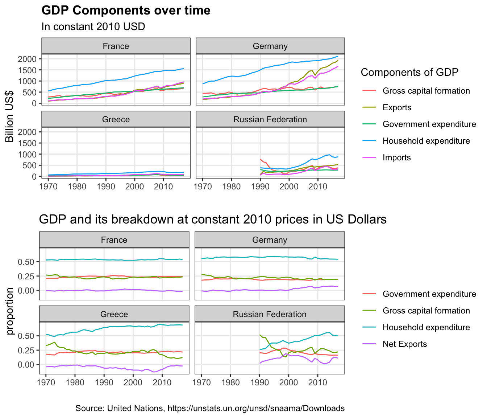
# As an overall, we would like to thank you for an opportunity to learn and improve our knowledge in R.
# Tasks were really challenging (at some point of time we wish it was not SO challenging)
# and interesting to learn. Thank you!
Deliverables
There is a lot of explanatory text, comments, etc. You do not need these, so delete them and produce a stand-alone document that you could share with someone. Knit the edited and completed R Markdown file as an HTML document (use the “Knit” button at the top of the script editor window) and upload it to Canvas.
Details
- Who did you collaborate with: TYPE NAMES HERE
- Approximately how much time did you spend on this problem set: ANSWER HERE
- What, if anything, gave you the most trouble: ANSWER HERE
Please seek out help when you need it, and remember the 15-minute rule. You know enough R (and have enough examples of code from class, your previous homeworks, and your readings) to be able to do this. If you get stuck, ask for help from others, post a question on Slack– and remember that I am here to help too!
As a true test to yourself, do you understand the code you submitted and are you able to explain it to someone else?
Rubric
Check minus (1/5): Displays minimal effort. Doesn’t complete all components. Code is poorly written and not documented. Uses the same type of plot for each graph, or doesn’t use plots appropriate for the variables being analyzed.
Check (3/5): Solid effort. Hits all the elements. No clear mistakes. Easy to follow (both the code and the output).
Check plus (5/5): Finished all components of the assignment correctly and addressed both challenges. Code is well-documented (both self-documented and with additional comments as necessary). Used tidyverse, instead of base R. Graphs and tables are properly labelled. Analysis is clear and easy to follow, either because graphs are labeled clearly or you’ve written additional text to describe how you interpret the output.